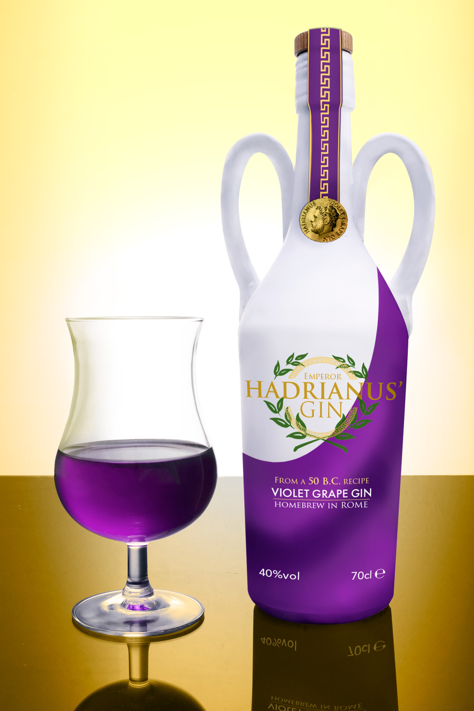

Jouw website is jouw online brochure!
Ik bouw met plezier aan jouw website.
Over mij
Ik ben Robin
Services
-
Ontwerp + Ontwikkeling
Strakke, moderne ontwerpen - geoptimaliseerd voor prestaties, zoekmachines, en het omzetten van gebruikers naar klanten.
-
Analyse
Inzicht krijgen in wie er op uw site surft, zodat u slimmere zakelijke beslissingen kunt nemen.
-
Mobiel-vriendelijk
Een responsive design maakt uw website toegankelijk voor alle gebruikers, ongeacht hun toestel.
-
Controle prestaties van je website
Verbeteren van jouw pagina hun prestaties, SEO of gebruikerservaring
-
Inhoudsbeheer (Content Management)
Aangepaste WordPress thema en plugin ontwikkeling. Gemakkelijk te bijwerken inhoud zonder te weten hoe je moet coderen.
Portfolio
Hieronder zie je aantal placeholder projecten waaraan ik meegewerkt heb.
-
Bootcamp NMD2 2021-22
Hoe kunnen we subsidie data aantrekkelijk vormgeven voor alle doelgroepen, zowel professionals als jan modaal? Dat is de vraag die studenten 2NMD kregen van de Vlaamse Overheid tijdens hun bootcamp. Een week lang gingen ze hiermee aan de slag van idee tot prototype.
-
Kijkplaat - filmstill
Ga op zoek naar een sprekende scene uit jouw (favoriete) film. Je gebruikt deze scene als inspiratie of voorbeeld om jouw Film still mee te maken. Je gebruikt geen echte acteurs, auto's, voertuigen, ... maar wel speelgoed! Denk aan een krachtige lay-out met de nodige klemtonen en heel wat diepte!
-
De Kleine Zeemeermin
Maak een fotorealistisch beeld gebaseerd op de Disneytekenfilm 'de kleine zeemeermin'. Je gebruikt een fragment uit de film of maakt een beeld dat naar meerdere scènes van de film verwijst.
-
Mythes
Maak een fotorealistisch beeld gebaseerd de Minotaurus. Je maakt een beeld waaruit héél duidelijk blijkt over welke mythe het gaat. Het hoofdpersonage wordt duidelijk uitgewerkt. Compositie, sfeer, licht en schaduwen zijn énorm belangrijk voor het creëren van een samenhangend beeld met een duidelijke eye-catcher.
-
Gin-verpakking
Ontwerp de vormgeving/etiketten voor een fles gin naar keuze. Je vindt hiervoor een nieuw merk uit met zijn eigen kwaliteiten. De uitwerking van de verpakkingen is sterk conceptueel onderbouwd. We gaan opzoek naar een zéér modieus etiket EN modieuze verpakking. Denk voldoende na over de vorm van de fles.